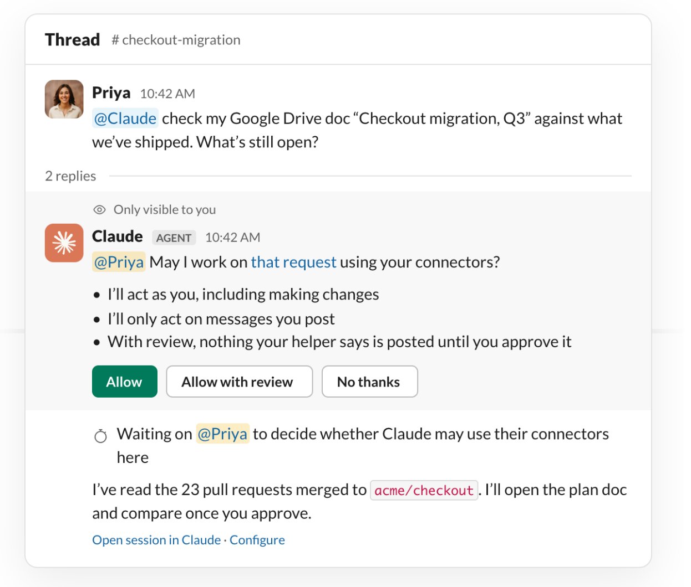
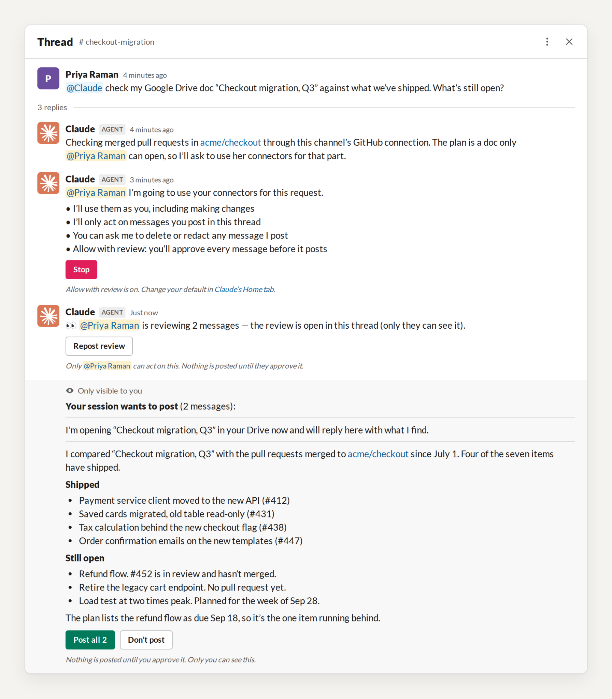

Claude Tag (beta) lets you add Claude to a Slack channel, where it works alongside your team. Until now, Claude could only use the connectors an admin attached to the channel, and most organizations keep that list short on purpose: they want access to follow the person, not the channel.
Now Claude can use your own connectors for a request you make in a channel. For example, your calendar, your drive, your assigned accounts on the CRM, or your staging deploys. If you have connected it to your Claude account, you can access it in the channel.
You decide how information is surfaced from when you ask Claude to access your connectors. You can review each response before it posts. Alternatively, you can use auto mode to post automatically unless Claude determines there is sensitive content that needs your review. On Enterprise plans, admins will be able to require review for everyone.
Personal connectors provide admins more governance options. They can provide access to a shared set of tools under an agent identity, have channel members only use personal connectors to rely on existing role-based access, or decide tool by tool.
Personal connectors in Claude Tag are rolling out now on Team plans, with Enterprise to follow.
Using personal connectors
Most of what people need in a channel sits behind their own login: a time that works on your calendar, your open deals, a plan only you can open. Now you can ask for those in the channel too.
For example, here's Priya in #checkout-migration, a channel connected to GitHub. She asks: "@Claude check my Google Drive doc 'Checkout migration, Q3' against what we've shipped. What's still open?"

Claude reads the merged pull requests through the channel's GitHub connector. The doc is one only Priya can open. Before, Claude would have stopped there.
Now Claude reads the doc through Priya's Google Drive connector, separately from the channel's work, and posts what shipped and what's left. Priya's plan isn't sensitive, so she uses auto mode and Claude screens the comparison before it posts. For a document she'd rather check first, she can switch to review mode and see the response before the channel does.

Everything Claude does through your connector appears in that tool's own log under your account, the way your direct-message work does today. The channel's own work stays under its service account, the one your security team already follows.
You decide what Claude reaches and what the channel sees, the same as when you use your connectors in a direct message, and you can disconnect a connector at any time.
Where the channel's own connectors still matter
Personal connectors don't run unattended. Scheduled routines, and anything Claude starts on its own, use the connectors an admin attached to the channel. Tools that are needed for unattended actions, or actions the entire channel relies on, should use shared connectors.
For example, you may want to add Claude to your #on-call channel to help with CI triage and response. Claude can identify and help remediate issues (even after work hours) if you set up shared connectors to your runbook, monitoring tools, and deployment history.
A channel that solely relies on personal connectors suits closely supervised work. For example, collaboratively drafting an RFP response may require pulling data from pricing or other sensitive sources that are not provisioned to the entire channel. Anything Claude posts is visible to everyone in the channel.
What's next
There's nothing to install. When a request of yours needs one of your connectors, Claude asks you the first time, then uses it in the thread.
Ask @Claude in a channel for what only you can reach. Learn more about Claude Tag.